独角兽敢达（毁灭模式） 独角兽敢达（独角兽模式） 【型号】RX-0 【总高度】19.7m 【机体重量】23.7t 地球联邦军委托亚纳海姆电子公司，秘密进行“UC计划”过程中所开发的原型机动战士。机身通体纯白，特征是头上的一根角，俗称“独角兽”。全身的驱动内构均以精神感应框架构成。机体的反应速度极快。搭载两套系统，抱括可启动毁灭模式的特殊OS：NT-D，以及引领驾驶员前往“拉普拉斯之盒”所在位置的拉普拉斯程式。
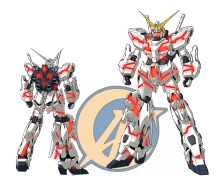
独角兽敢达（毁灭模式） 【型号】RX-0 【总高度】21.7m 【机体重量】23.7t 启动NT-D系统后所展现出的独角兽敢达的真面目。由于感受到了新人类的存在，解除了机体的限制，令内部骨架扩张，全身得以变形。为了配合变形，装甲从接缝中分离，开放滑道，从装甲的隙缝间露出的内部构造，闪耀赤红磷光，这便是普遍认为的“精神感应框架”的发光现象。NT-D启动时，机体的性能，特别是机动性能会有飞跃性的大幅增强。
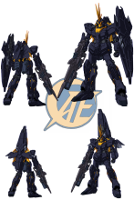
独角兽敢达02报丧女妖命运女神型（独角兽模式） 【型号】RX-0（N） 【总高度】19.7m 【机体重量】27.3t 独角兽敢达二号机，俗称报丧女妖的整体性能提升规格。主要武装光束麦格农的枪身底部安装了旋转发射器，扩充盾牌功能的武装?装甲DE，背部则安装了能进一步提高驾驶者和机体相融性的武装?装甲XC。武器完备的报丧女妖命运女神，载着新驾驶员朝宇宙飞去。
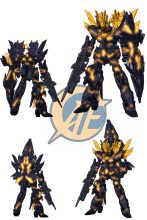
独角兽敢达02报丧女妖命运女神型（毁灭模式） 【型号】RX-0（N） 【总高度】21.7m 【机体重量】27.3t 启动NT-D让机体各部位的开启结构，与新增到报丧女妖命运女神机体上的精神感应框架武装产生同样反应。特别是背部的武装?装甲XC，会变成狮子鬃毛般的形状，让报丧女妖完全觉醒，成为猛兽。
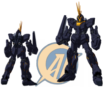
独角兽高达二号机报丧女妖（独角兽模式） 【型号】RX-0（N） 【总高度】19.7m 【机体重量】24.0t 作为“UC计划”的核心，是专门用来对付装备了精神感应系统的MS，且经过强化的RX-0独角兽敢达的二号机。融入了在重力状态下运作的实验数据，经过最终调整，并获得专用设计的新增精神感应框架“武装战甲”。和一号机属于同型机体，但较一号而言完成度更高。
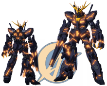
独角兽高达二号机报丧女妖（毁灭模式） 【型号】RX-0（N） 【总高度】21.7m 【机体重量】24.0t NT-D（新人类毁灭系统）启动后，令机体性能大幅增强，从而开启了毁灭模式的报丧女妖。黑色装甲的缝隙间，露出散发闪闪金光的精神感应框架，是为了完成“UC计划”原本目的而制造的狩猎机器。
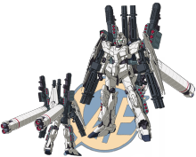
全装甲独角兽敢达（独角兽模式） 【型号】RX-0 【总高度】19.7m 【机体重量】45.1t 作为独角兽敢达的决战规格，机体搭载了所有残存在拟?阿卡马号上的装备。由巴纳吉的朋友拓也?伊礼提议，再由亚纳海姆电子公司（AE社）的亚伦?戴尔杰夫调整改装而成。
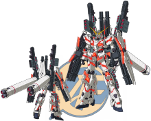
全装甲独角兽敢达（毁灭模式） 【型号】RX-0 【总高度】21.7m 【机体重量】45.1t 全装甲独角兽敢达启动NT-D后的状态。大量武器装备于全身，但不会影响到过程中需要伸展机体的毁灭模式，也不会阻碍肢体的活动，更能全面发挥机体被赋予的攻击性能。
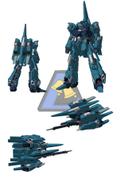
里歇尔 【型号】RGZ-95 【总高度】20.5m 【机体重量】25.8t 以量产化Z敢达为目的而开发的RGZ(改良Z敢达)系列的机体之一。量产化还算成功，包括队长机在内，拟?阿卡马号一共装配8台。与采用了BWS(背部武器系统)代替变形系统的RGZ-91灵格斯相比，本机以运用变形结构的弹性应用为前提而设计的，变形结构改回使用MSA-005梅塔斯的方式，成功简化。
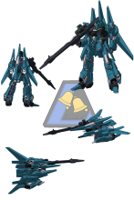
里歇尔（队长机） 【型号】RGZ-95C 【总高度】20.5m 【机体重量】28.1t 里歇尔的队长机规格，背包形状与普通机体不同，标准装备包括大火力米加光束炮。
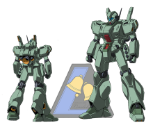
杰刚 【型号】RGM-89D 【总高度】19.0m 【机体重量】21.3t 是U.C.0090年代初期，地球联邦军运用的主力量产机。是融合了联邦军吉姆系MS的专门技术，以及亚纳海姆电子公司顶尖的MS开发技术而诞生的杰作，十分可靠。“逆袭的夏亚”后，地球联邦政府缩减军费，其后数年不断进行微调，继续成为主力MS。
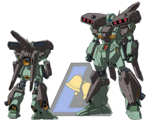
武装强化型杰刚 【型号】RGM-89DS 【总高度】19.2m 【机体重量】28.4t 取代吉姆系列成为最新主力MS的，是宇宙世纪0096年代地球联邦军所采用的“杰刚”的特殊规格机，作为小队长专用机。除了装设增装装甲和推进器加强机体性能，该机体继承吉姆III概念，在双肩上又加装了飞弹发射器组件。为了减少追加装备与机体间的空隙，本体规格和一般杰刚机体的设计也略有不同。
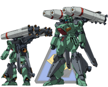
武装强化型杰刚原型 【型号】RGM-89S 【总高度】19.2m 【机体重量】29.1t 总高度/总长度:12.2m(MS时)/9.66m 宽度:宽5.78m（战车时） 把初代的杰刚进行大幅改良，作为MGM-89S武装强化型杰刚的运用试验机，生产数量稀少。是分配到隆德?贝尔队拟?阿卡马号的补充战力。
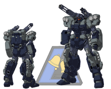
杰斯特加农 【型号】RGM-96X 【总高度】19.3m 【机体重量】39.7t U.C.0095 RGM-96X 原本是独角兽敢达的随行机杰斯塔的装备衔生机。枪械控制能力得到强化，扩充装备包括光束来福枪、右肩设有光束加农炮，左肩有四连连环发射器，脚侧有三连手榴弹发射器，属重装规格。这些武器和外加装甲，可以依战况引爆爆炸螺栓，瞬间拆卸。
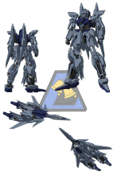
德尔塔普拉斯 【型号】MSN-001A1 【总高度】19.6m 【机体重量】27.2t 亚纳海姆电子公司制作的可变MS，用来辅助在工业7号宇宙领域中、和“带袖的”交战而失去大半舰载战力的拟·阿卡马号。可变形为飞行形态，能够独自进入大气层，并且在1G重力下飞行，是一架在所有领域下都能活动的万能攻击机。由于试作机的高规格而难以编成部队，就分配到同样高规格、经常单舰出动的拟·阿卡马号上。
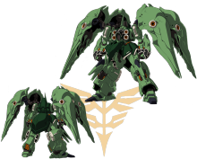
刹帝利 【型号】NZ-666 【总高度】22.3m 【机体重量】29.7t 新吉翁开发的20级MS，搭载精神感应系统。增设集合武器、推进器、感应炮荚舱的肩甲，并使用了精神感应框架，成功减小体型，但仍保留与NZ-000昆曼沙的同等火力。胸部驾驶舱周围的材质中，有部分采用了精神感应框架。
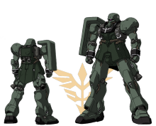
基拉·祖鲁 【型号】AMS-129 【总高度】20.0m 【机体重量】21.8t 取代基拉?德卡，成为新吉翁军的第二期主力MS，由亚纳海姆电子公司负责开发的量产型MS。虽然设计沿用正统的吉翁军风格，但手腕和胸部则有揭示「带袖的」称号由来的标记。袖子图案和尖刺形状，也会按照使用部队和驾驶员的军衔而有所不同。
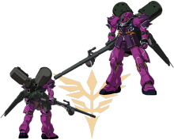
基拉·祖鲁（安杰洛·梭裴专用机） 【型号】AMS-129 【总高度】20.0m 【机体重量】27.3t 涂上了个人专用色紫色，是伏朗托亲卫队队长安杰洛·梭裴专用的基拉·祖鲁。背部设有重装用背包，内有两台大型推进剂贮箱，以强化推动力，方便长时间作战。利用长距离支援用光束武器长管布鲁诺炮·改，支援新安州的战斗。
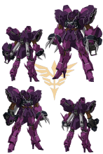
罗森·祖鲁 【型号】YAMS-132 【总高度】22.5m 【机体重量】25.8t 将曾在阿克西斯上使用的新吉翁悍马·悍马的概思升华，并以基拉·祖鲁为基础而开发的测试MS，内藏三连MEGA粒子炮的双手，是被称为INCOM的准精神感应武装，可以和机体分离，进行有线遥控。
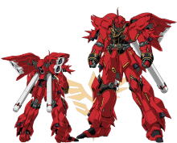
新安州 【型号】MSN-06S 【总高度】22.6m 【机体重量】25.2t U.C.0094年，“带袖的”从亚纳海姆电子公司抢走的测试MS。机体部分框架采用了精神感应框架，而通过它所验证的传导性提升、以及强度等等资料，后来用于制作独角兽。是“带袖的”领袖弗尔·伏朗托的专用机，其压倒性的战斗力，以及赤红色的外观，令人联想到“红色彗星”。
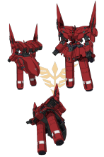
新吉翁号 【型号】NZ-999 【总高度】116.0m 【机体重量】153.8t 以新安州作为核心组件，专门用来攻击据点的巨大MA。与其说是合体，更恰当的说法是它承载了新安州，气势磅礴，把赤色彗星的机体从人形变成拥有压倒性力量的怪物。配有许多基于精神感应框架技术的新武器，让弗尔·伏朗托以万全的状态进行最终决战。